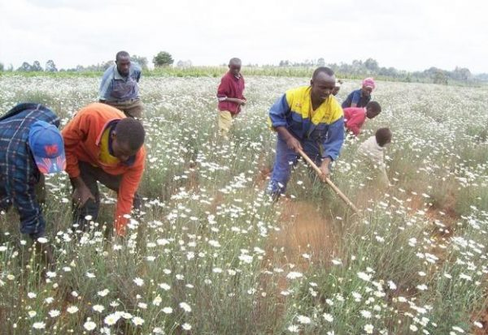
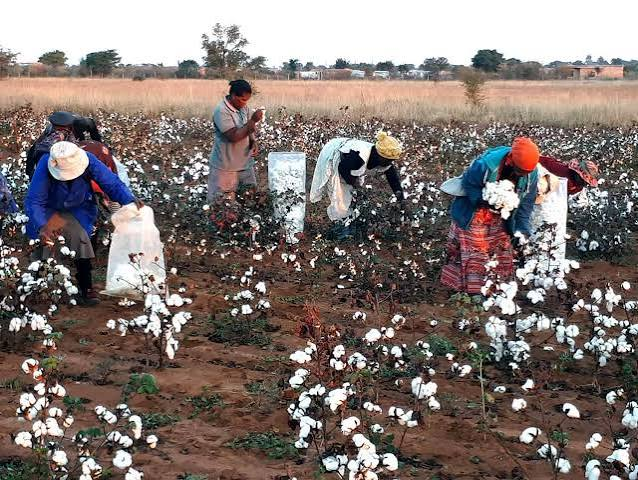

Pyrethrum Farming
Pyrethrum is grown for its flowers, which are processed to produce natural insecticidal ingredients.
Farming Activities
- Land preparation
- Planting seedlings
- Weeding and harvesting
Growing quality pyrethrum and cotton
We promote sustainable farming of pyrethrum and cotton to support agricultural productivity and rural livelihoods.

Pyrethrum is grown for its flowers, which are processed to produce natural insecticidal ingredients.

Cotton is an important fibre crop used in the production of textiles and other products.